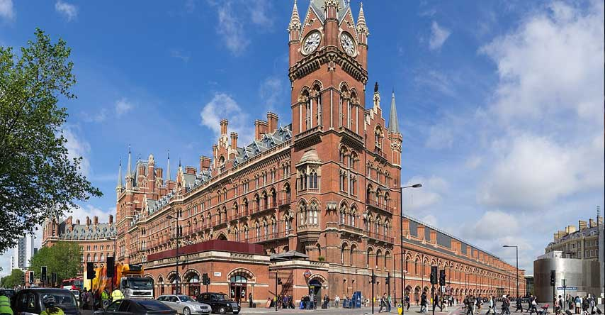

St. Pancras Station

Aproveite que você já está na estação King's Cross e atravesse a rua. Logo do outro lado está a estação St. Pancras.
Em Harry Potter e a Câmara Secreta, o mágico carro Ford Anglia dos Wesleys sai voando em frente à fachada da estação. Vai que você encontra um voando por lá e não tira uma foto?
Essa estação, na vida real, tem um lindo estilo neogótico e, mesmo que você não veja nenhum carro voador, a foto é garantida! Além disso, ela serve ao transporte público de Londres. É de lá que sai o Eurostar, o trem de alta velocidade que liga Londres à Paris e Bruxelas.
Horário de funcionamento: O dia todo.